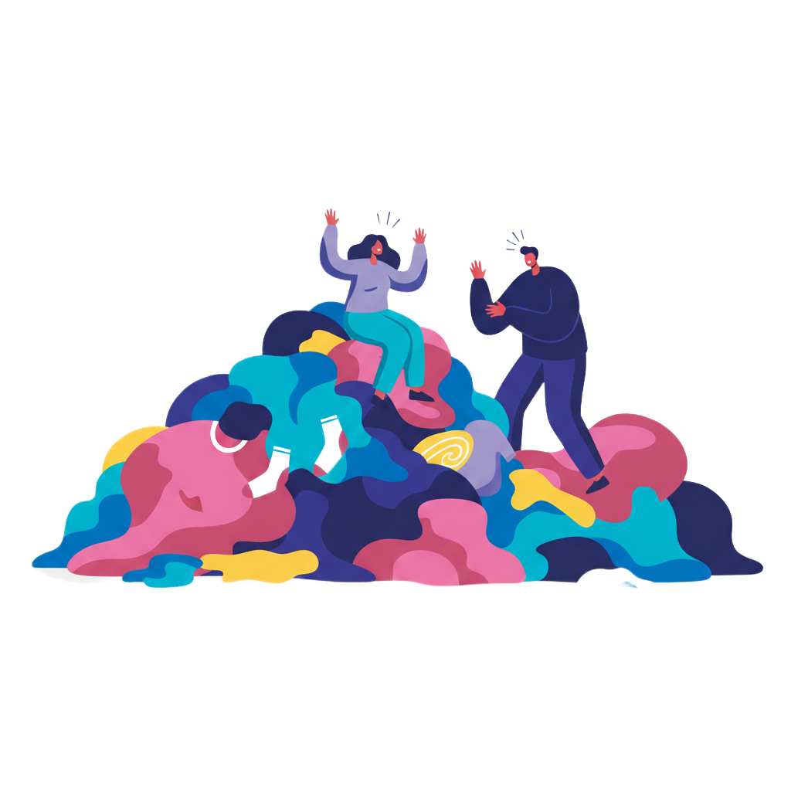
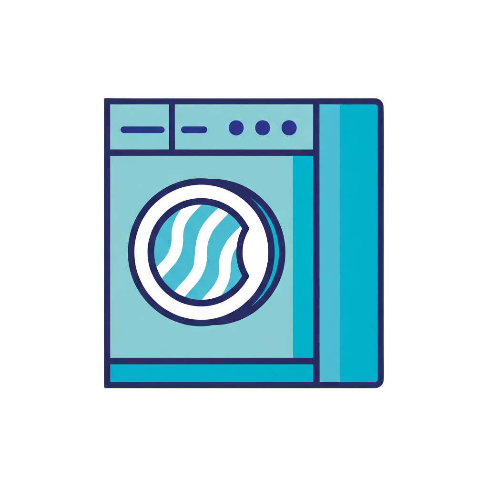
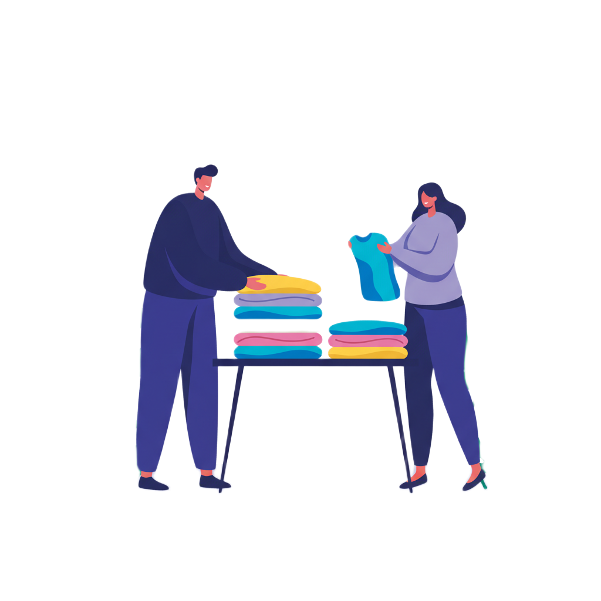
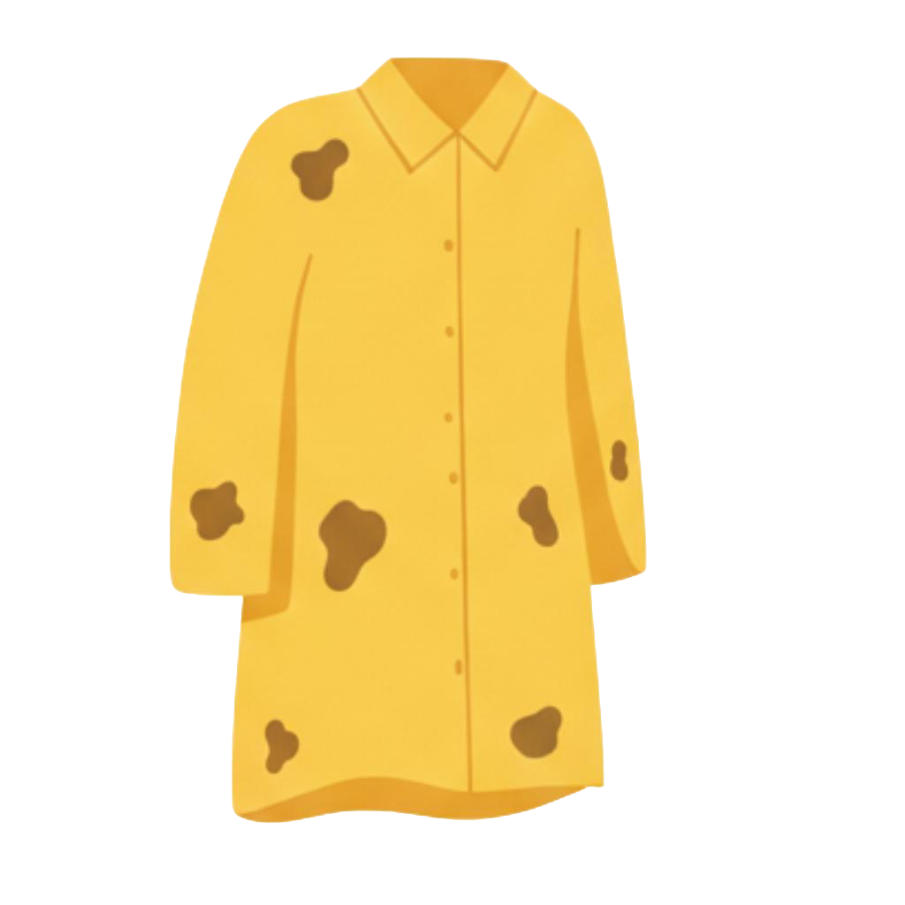

Conheça a Lavô Campina Grande. A sua lavanderia de autoatendimento inteligente: rápida, econômica e 100% focada na sua praticidade.




Faça parte da comunidade que valoriza o cuidado com as roupas e o respeito ao meio ambiente. Lave de forma inovadora e vá curtir o que realmente importa.